You are here: Home → Mini Project 1
Mini Project Part 1.
Overview
In this assignment we will review how to set up a project, learn about references, and then jump right into having fun arranging your finished robot(s) as well as a few objects we've provided you with.
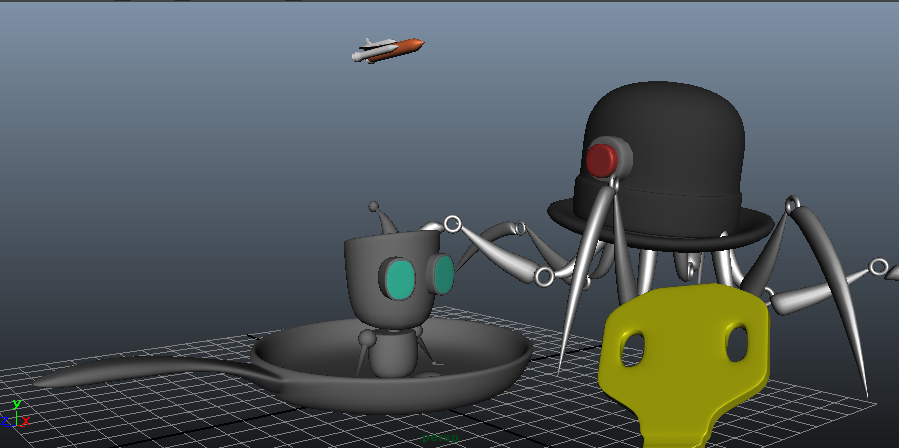
(Review) Making a Maya Project
First of all, we will review how to make a project and make a project for this week's assignment.
Create a New Project
Go to File → Project → New... to create a new project named UCBUGG Mini Project. We're gonna name the Scenes location scenes, and the Images location images for this project and that is all we need to worry about. 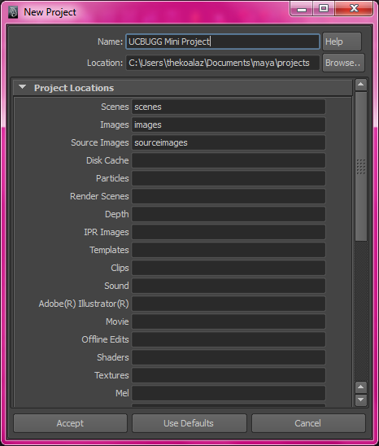
Now if you try to open a file through File → Open Scene..., you will notice that on the left hand side that the Current Project is now set to UCBUGG Mini Project.
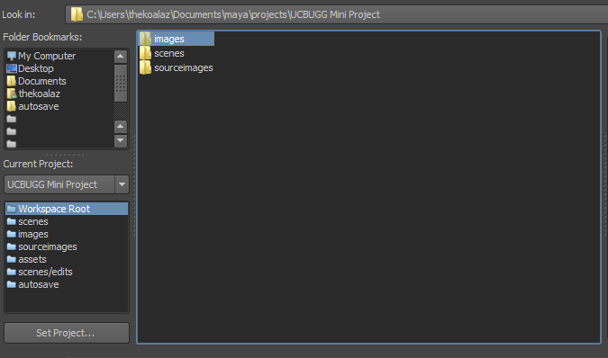
Create New Folders
Inside the scenes directory in your file system, make a directory named chars, props, and sets. These folders will from now on be known as scenes/chars, scenes/props, and scenes/sets as they are under the scenes directory.
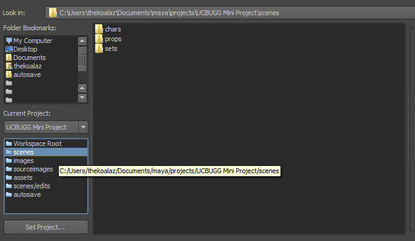
Download this zip file here and put them under scenes/props. Also, download this zip file here and put them under scenes/chars. Also, while we are at it lets put your finished robot from the first lab into scenes/chars as well. A project needs to be self-contained so we need to have all the files you're going to use in the same project at all times.
Now our project is all set up to be used!
References
Before we go into the fun part, we must learn a new concept called reference. This is great way to keep your projects organized, as referencing between Maya files has a few nice properties which are listed in the Extra for Experts section for those of you that are curious.
As an example, I am going to reference my robot and frying pan into a new scene. You can make a new scene by going to File → New Scene.
Make sure you save this scene as main scene in scenes/sets as main scene.
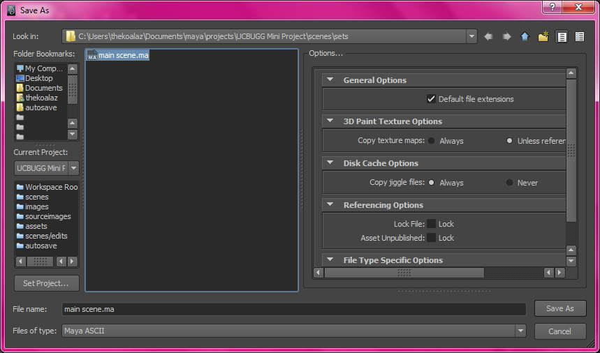
In order to reference objects simply go to File → Create Reference in your Maya menu, and select the file you wish to reference.
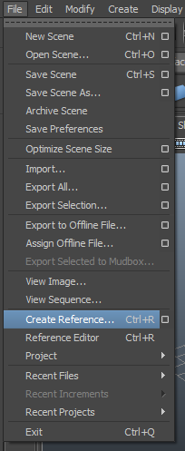
Now I am going to File → Create Reference and reference in scenes/props/robot.ma and scenes/props/frying pan.ma.
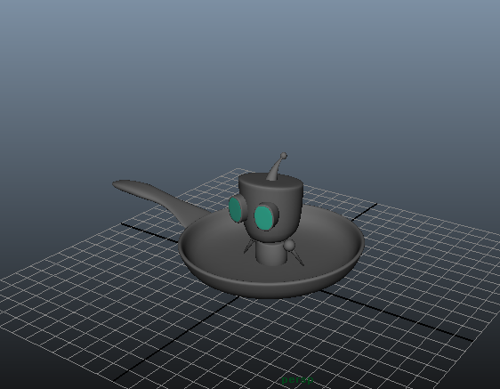
If you've noticed, this brings in that file into our scene! This is one major way of bringing in different maya files that you or someone has worked on separately into a single file.
However, you also see that the frying pan is too big for our little robot. We'll discuss this further when we talk about modeling but it is up to you and your teammates to come up with a way to unify sizes between your models.
For now I'm going to just scale things until they are the right size (As you've all learnt from lab), and here it is!
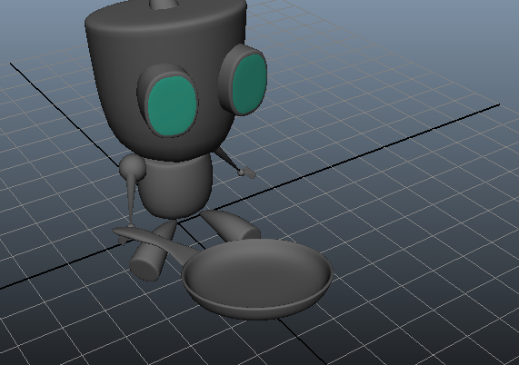
Your Very First Maya Scene
Now you know everything to make your own scene. Remember to create a new file under scenes/sets and make your own scene. Feel free to create more robots, more objects, and get creative. Have fun!
How to Submit
Once you're done, please zip the whole project directory up(if you're not sure how ask the facilitators), name it HW1 YOURNAME MINI PROJECT and send it to homework@ucbugg.com with the subject line HW1-firstname-lastname.
Extra for Experts
These are extra material that is not necessary. But for those of you students who wish to peek ahead, go ahead and take a look!
Moving pivots
One problem you might have encountered when moving and rotating objects around is only being able to rotate around the center like in the picture.
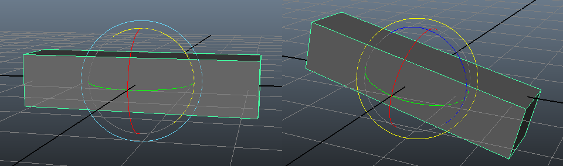
In the case of your robot arm, you most likely want to rotate it around the shoulders, or other various "joints" that make sense instead of the center. This is a topic that will be covered in detail but if you want a peek of what we will be doing in 5 weeks time, you can view the Basic Rigging chapter. Specifically, the Skeleton section right up onto the Joints section is what we are looking for. In that section of the lab, you will learn how to group skeletons in appropriate hierarchies and also move your gizmo around to change the pivot of your rotations.
Dive deeper into the world of Referencing
What exactly is referencing? Much like the name suggests, it is a way of telling Maya that the specific object is not actually in the file, but rather it should try to "reference" it from another file.
Here are some of the reasons references in Maya are useful:
-
Multiple people can work on different parts of the project by breaking it down by assets.
e.g. You work on the robot, I'll work on the frying pan.
-
If ever someone makes a change to a file, it will propagate up the hierarchy, automatically syncing everyone's work to the most recent one.
e.g. If you had a scene, that referenced in a robot, and the robot file also referenced in a separate hat for the robot, and then you modify the hat file, this change will be shown in the robot file, and in the scene file as well. 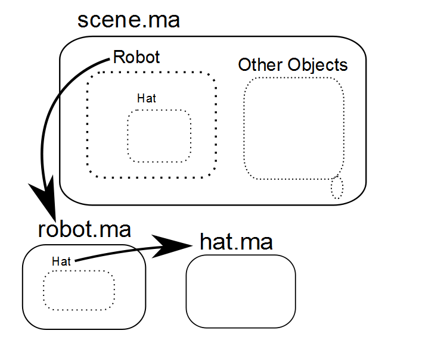
-
You can easily manage all this with the Reference Editor which I will introduce to you shortly.
To give you an example of the second bullet point, consider the following situation.
I made my robot hold a frying pan and I'm happy with that, but without me knowing the frying pan was changed to be cooler. In this case, cooler means adding a cube in the middle. (Make sure it's saved!)
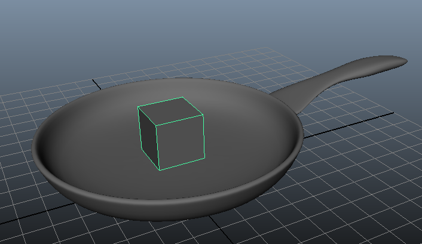
Now, if it weren't for references, I'd have to add the cube to the frying pan in my main scene as well, which is double the work. However, since the frying pan in my main scene is actually referencing in frying pan, we only need to reload the reference. In order to do this, we'll introduce a new tool called the Reference Editor. This can be found under File → Reference Editor.
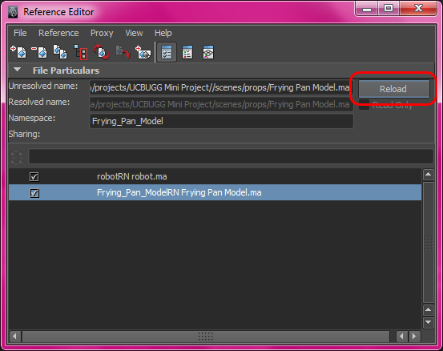
The Reference Editor is a powerful tool that allows you to manage your references effectively. Right now we are mainly interested in Reload. If I select the Frying Pan reference and click Reload...
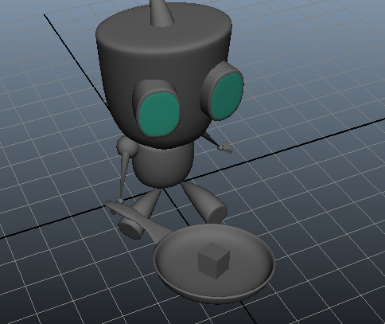
Voila, Our robot is now frying a cube!
The things you can do with References are endless and is heavily used in any kind of movie project in the real world. We can't cover all of these at once, but you will soon enough learn most of them!